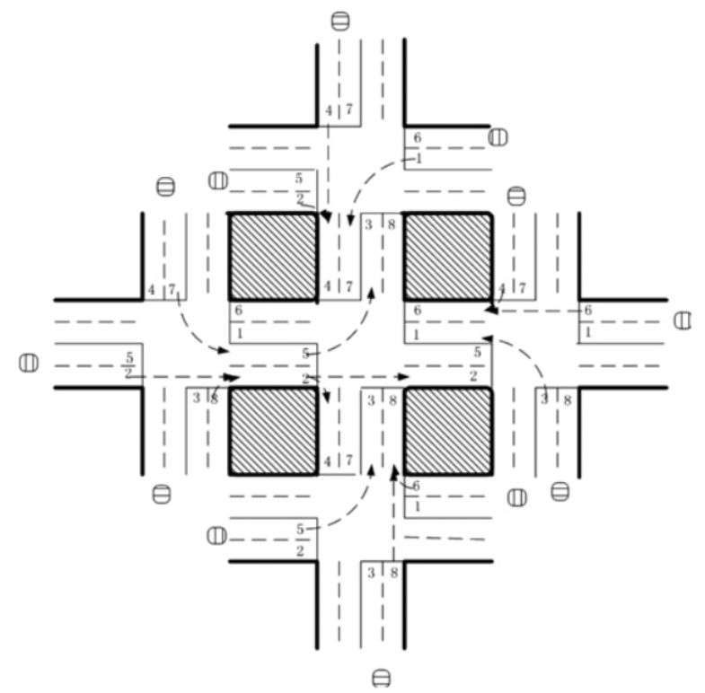

Cet article présente met la lumière sur diverses applications de RL dans l'industrie
Reinforcement Learning & Gaming
Reinforcement Learning & Robotics
Alors que les techniques de Deep Learning deviennent de plus en plus utilisées en industrie, notamment
à cause de leurs applications en vision et en NLP, le Reinforcement Learning semble être pour le moment
sous-évalué.
En outre, il semble qu'il y ait peu de ressources pour expliquer en détail comment le RL est appliquée dans
différentes industries.
Ceci dit, l'apprentissage par renforcement ne devrait pas être négligé dans la
recherche en entreprise, étant donné son énorme potentiel d'aide à la prise de décision.
Comme l'a dit Koray Kavukcuoglu, directeur de la recherche chez Deepmind :
“Combination of DL and RL is the best answer we have so far in terms of learning very good state representations of challenging tasks to solve challenging real world problems.”
Koray Kavukcuoglu
Par conséquent, le présent article vise à examiner l'étendue des applications du RL dans le monde réel à l'heure actuelle, le lien du RL à d'autres domaines ainsi que le potentiel d'utilisation du RL dans le futur.
Applications du Reinforcement Learning
Gestion de feux de signalisation
Dans l'article "Reinforcement learning-based multi-agent system for network traffic signal control"[3],
on essaie de concevoir un contrôleur de feux de signalisation pour résoudre le problème de congestion.
Testées uniquement sur un environnement simulé, leurs méthodes ont donné des résultats
supérieurs à ceux des méthodes traditionnelles et ont mis en lumière les utilisations potentielles
de multi-agent RL dans la conception des systèmes de circulation.
Cinq agents ont été placés dans le réseau de circulation à cinq intersections, avec un agent de RL
à l'intersection centrale pour contrôler la signalisation routière. L'état a été défini comme un vecteur à
huit dimensions, chaque élément représentant le flux de trafic relatif de chaque voie. Huit choix s'offraient
à l'agent, chacun représentant une combinaison de phases, et la fonction de récompense était définie comme
la réduction du délai par rapport au pas de temps précédent.

Robotique
Il y a un travail colossal sur l'application de RL en robotique. En particulier, [11] a formé un robot
pour qu'il apprenne les politiques de mise en correspondance des images-vidéo brutes avec les actions du robot.
Les images RVB ont été transmises à un CNN et les sorties étaient les couples moteur.
L'élément RL était la recherche politique guidée pour générer des données sur la formation qui provenaient
de sa propre répartition par État.
Voici une vidéo de la chercheuse à MIT auteur de ce travail.
Gaming
Le Reinforcement Learning est devenu beaucoup plus connu de nos jours parce que c'est l'algorithme principal
utilisé pour résoudre différents jeux et parfois atteindre des performances surhumaines.
Les plus célèbres d'entre sont AlphaGo[12] et AlphaGo Zero[13], mis en place par DeepMind (une équipe de Google),
qui ont été très médiatisé à tel point qu'un documentaire a par la suite été fait autour d'eux (disponible sur Netflix
et autres plateformes).
AlphaGo, qui a été entrainé avec des millions de parties jouées par des humains, avait déjà atteint une
performance surhumaine et d'excellent résultats grâce au champion du monde en place. Pourtant, les chercheurs
ont réfléchi plus tard et ont essayé de purifier leur travail en apportant le minimum d'expertise possible : en d'autres
termes, le but était de créer un modèle sans Domain Knowledge, sans voir les parties d'autres humains mais seulement
en jouant contre soi-même jusqu'à ce qu'on apprennne à jouer, d'où le nm "Zero". Cette approche s'est révelée fructueuse puisque
finalement le nouvel agent, AlphaGo Zero, a joué contre l'original AlphaGo et lui a infligé 100-0.
Lien entre RL et autres domaines
RL a une relation très étroite avec la psychologie, la biologie et les neurosciences.
Comme dit auparavant, ce que fait un agent de n'est qu'un essai-erreur : il apprend à quel point ses actions
sont bonnes ou mauvaises en fonction des récompenses qu'il reçoit de l'environnement. Et c'est exactement comme ça
que l'homme apprend à prendre une décision. Par ailleurs, le problème de l'exploration et de l'exploitation ou encore
les tentatives de modélisation de l'environnement sont aussi des problèmes auxquels
nous sommes confrontés dans notre vie quotidienne.
La théorie de l'économie peut aussi éclairer un peu la question de la RL. En particulier,
l'analyse de l'apprentissage du renforcement multi-agent (MARL) peut être comprise à partir des perspectives
de la théorie des jeux, qui est un domaine de recherche développé par John Nash pour comprendre les interactions
des agents dans un système.
Potentiels d'utilisations futures
La complexité des modélisations de Reinforcement Learning fait qu'il n'a pas été vulgarisé comme d'autres branches
de Machine Learning et qu'il ne peut donc pas être utilisé facilement.
Cependant, voici deux tâches par lequelles le RL pourrait avoir un impact important à l'avenir :
Bibliographie
[1] I. Arel, C. Liu, T. Urbanik, and A. Kohls, “Reinforcement learning-basedmulti-agent system for network traffic signal control,”IET IntelligentTransport Systems, 2010.
[2] S. Levine, C. Finn, T. Darrell, and P. Abbeel. End-to-end Training of Deep Visuomotor Policies. arXiv preprint arXiv:1504.00702, 2015.
[3] D. Silver, A. Huang, A., C.J. Maddison, A. Guez, L. Sifre,G. van den Driessche, J. Schrittwieser, I. Antonoglou, V. Panneershelvam, M. Lanctot, S. Dieleman, D. Grewe, J. Nham, N. Kalchbrenner, I. Sutskever, T. Lillicrap, M. Leach, K. Kavukcuoglu, T. Graepel, and D. Has-sabis. Mastering the game of go with deep neuralnetworks and tree search.Nature, 529(7587). 2016.
[4] D. Silver, J. Schrittwieser, K. Simonyan, I. Antonoglou, A. Huang, A. Guez, T. Hubert, L. Baker, M. Lai, A. Bolton, Y. Chen,T. Lillicrap, F. Hui, L. Sifre, G. van den Driessche, T. Graepel, and D. Hassabis. Mastering the game of go without human knowledge.Nature, 2017.